اختيار التاريخ والوقت

تظهر في هذه الشاشة المواعيد المتاحة للحجز ضمن الفترة المحددة مسبقًا بين تاريخ بداية الحجز وتاريخ نهايته (راجع الخطوة 05). ويختار المستخدم التاريخ والوقت المناسبين لموعد التوصيل.
Odoo After-Sales Service
بوابة التدريب لخدمات ما بعد البيع في Odoo
اختر التجربة التدريبية التي تريد مراجعتها.
عند اعتماد فاتورة تحتوي على خدمة التوصيل، ينشئ Odoo العناصر المرتبطة بالخدمة.

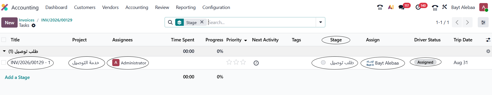
هذه هي المهمة المرتبطة بالفاتورة لتنفيذ خدمة التوصيل.
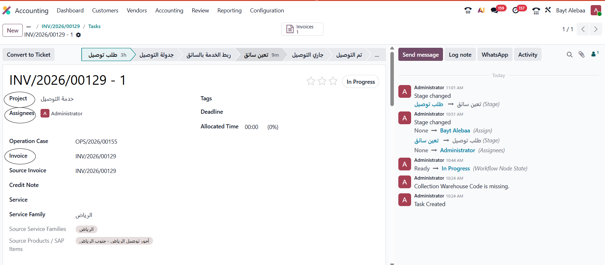
في هذه الشاشة تظهر تفاصيل مهمة التوصيل المرتبطة بالفاتورة.
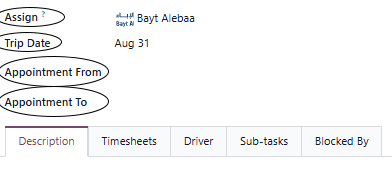
توضح هذه الحقول بيانات منفذ الخدمة والفترة المتاحة لحجز موعد التوصيل.
تعرض هذه المنطقة الفترة التي يكون موعد التوصيل ضمنها بين Appointment From و Appointment To.
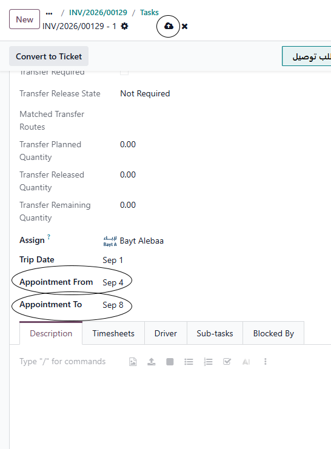
في هذه الشاشة تظهر الفترة المسموح خلالها بحجز موعد التوصيل.
Appointment From → Appointment To → Save
تعرض هذه الحقول حدود الفترة المحددة بين Appointment From و Appointment To.
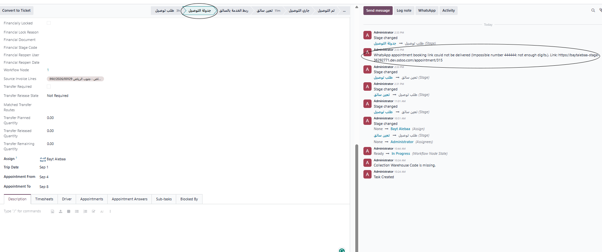
تظهر هنا مرحلة جدولة التوصيل بعد تحديد السائق والفترة المسموح خلالها بحجز الموعد.
توضح هذه الخطوة مراحل حجز موعد التوصيل، بدءًا من اختيار الموعد وحتى تأكيد الحجز.
تظهر في هذه الشاشة المواعيد المتاحة للحجز ضمن الفترة المحددة مسبقًا بين تاريخ بداية الحجز وتاريخ نهايته (راجع الخطوة 05). ويختار المستخدم التاريخ والوقت المناسبين لموعد التوصيل.

يقوم العميل بإدخال اسمه، والبريد الإلكتروني، ورقم الجوال، ثم يحدد موقع تنفيذ الخدمة على الخريطة قبل تأكيد الموعد.

تُعرض تفاصيل الموعد بعد إتمام الحجز للتأكد من تسجيل موعد التوصيل بنجاح.
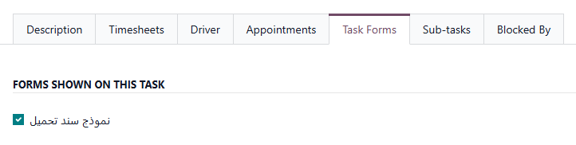
عند وصول المهمة إلى مرحلة تعيين سائق، يتم تعيين السائق المسؤول عن تنفيذ خدمة التوصيل.
بعد تعيين السائق، يتم تنفيذ خدمة التوصيل من خلال بوابة السائق، بدءًا من تشغيل المهمة وحتى تأكيد الاستلام واكتمال التوصيل.
بدء المهمة ← رفع الصورة ← إنهاء المهمة ← تأكيد العميل ← اكتمال التوصيل
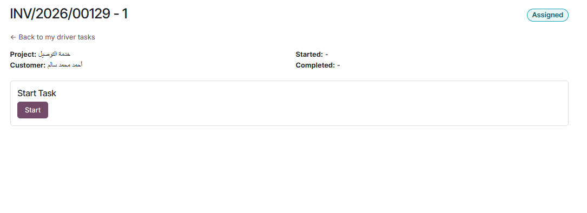
بعد تعيين السائق، يصل إليه رابط بوابة المهمة. يفتح السائق الرابط ويضغط على Start لبدء تنفيذ خدمة التوصيل.
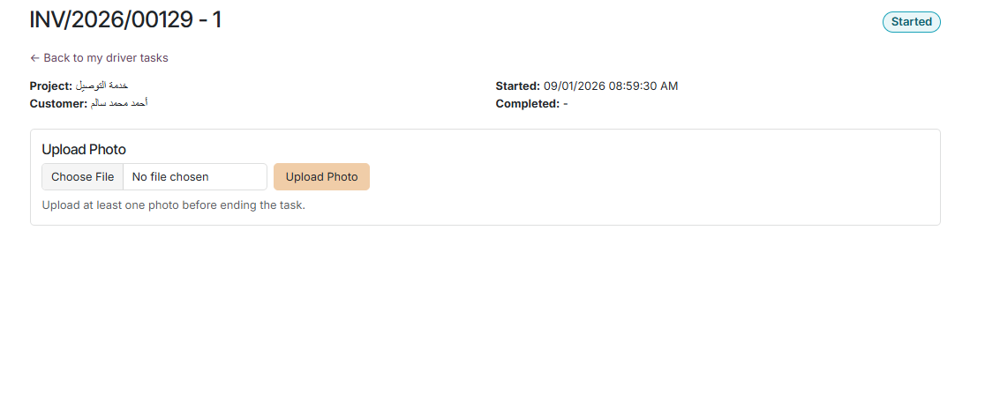
بعد بدء المهمة، يظهر للسائق قسم رفع الصور لتوثيق تنفيذ الخدمة.
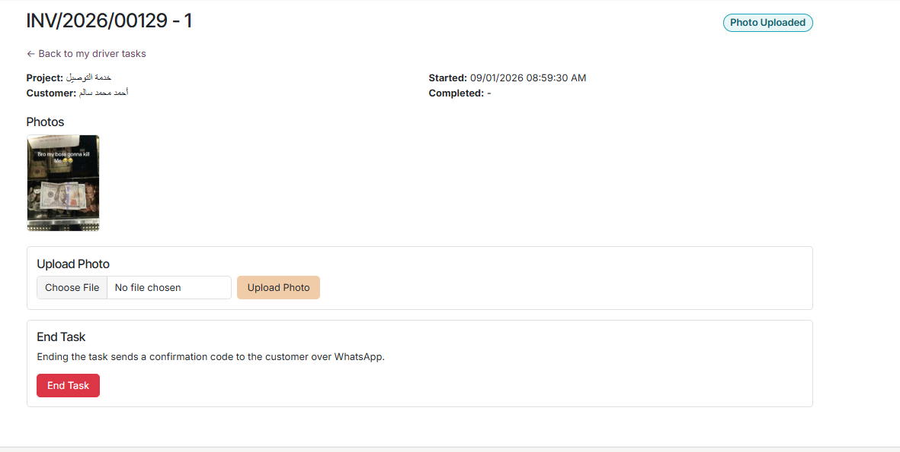
بعد رفع الصورة المطلوبة، تصبح المهمة جاهزة للإنهاء ويظهر خيار End Task.
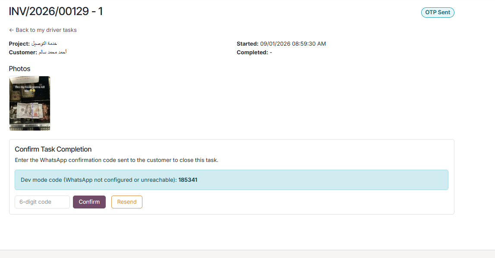
عند إنهاء المهمة، يتم إرسال رمز تأكيد إلى العميل، ويُستخدم الرمز لتأكيد استلام الخدمة.
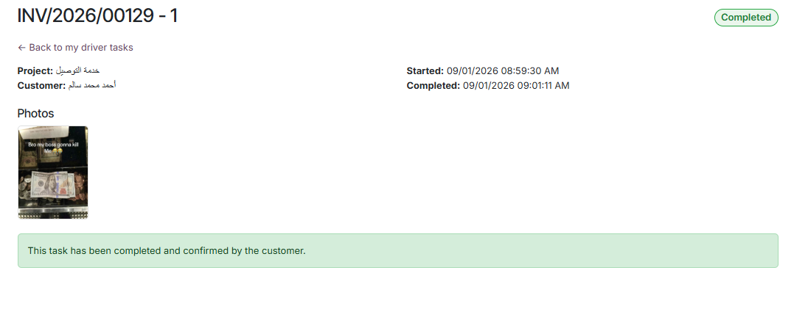
بعد تأكيد الرمز بنجاح، تتحول المهمة إلى Completed ويُسجل اكتمال خدمة التوصيل وتأكيد العميل.